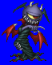
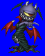
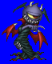
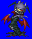

Height: ??? Weight: ???
Habitat: The Dark Abyss Origin: Iran
Meaning: Malevolant Spirit
Before the creation of heaven and earth, a battle between the forces of the god of virtue and the Ariman ensued, and the Ariman were banished to the Dark Abyss in the north. However, these malevolent spirits return to haunt the living with their poison and plague. Ariman have no defined form. They often appear as small animals such as frogs, toads, and snakes. Also called servants of Lucifer in some areas.